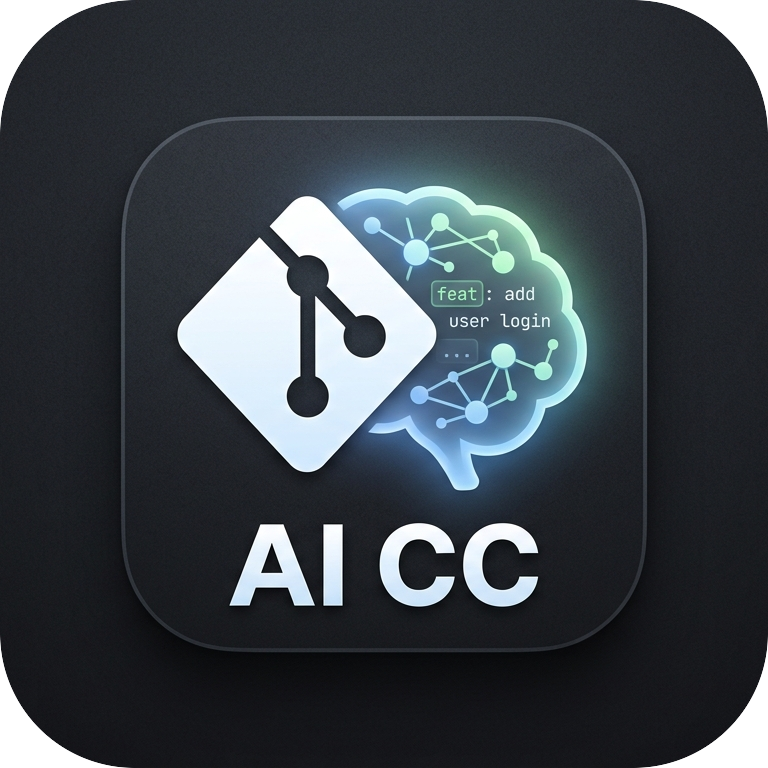

__VERSION__ · MIT · Node ≥ 20AI-assisted git commits that match your repo's style. Stage your changes, run one command, done.
Opinionated, fast, and batteries-included.
Analyses recent commit history and mirrors your team's conventions — emoji ratio, scope usage, title length, and more.
The split command plans and stages multiple atomic commits from a single
dirty working tree.
Iteratively shorten, expand, or change scope. reword any commit in history
with an interactive picker.
Three styles: standard, gitmoji (emoji + type), or
gitmoji-pure (emoji replaces type).
Three diff-detail levels control how much context is sent to the AI — ideal for sensitive codebases.
Transform and validate commit candidates with custom plugins. Register via the
plugins config key.
Stage your changes and let it do the rest.
# Install globally
npm install -g @kud/ai-conventional-commit-cli
# Optionally set up an alias
alias aicc='ai-conventional-commit'
# Stage your changes, then generate a single commit
git add -p
ai-conventional-commit
✔ feat(api): add pagination metadata to list endpoint
# Or split staged changes into multiple atomic commits
ai-conventional-commit split
1. refactor(parser): simplify token scanning
2. feat(parser): support negated glob segments
3. test(parser): add cases for brace + extglob combos
# Refine the last commit message
ai-conventional-commit refine --shorter --scope cli
✔ feat(cli): add split timing output
# Reword an existing commit interactively
ai-conventional-commit reword
Global flags:
--model <provider/name>
--style <standard|gitmoji|gitmoji-pure>
-y / --yes
Generate a single commit from staged changes. This is the default command.
Propose multiple atomic commits and execute each one with real selective staging.
--shorter / --longer--scope <s>--index <n>
Refine the last generated commit. Use --index to target a specific commit
from a split run.
AI-assisted reword of an existing commit. Omit hash for interactive picker.
HEAD auto-amends.
--interactive / -i--save--current
List, pick, and persist your preferred AI model globally.
View merged config with sources, read a single key, or persist a value to your global config file.
Place a
.aiccrc
in your project root, or set values globally at
~/.config/ai-conventional-commit-cli/aicc.json. Precedence: built-in defaults → env → global config → project config → CLI flags.
| Key | Default | Description |
|---|---|---|
model |
github-copilot/gpt-4.1 |
AI model in
provider/name
format.
|
style |
standard |
Commit title format:
standard,
gitmoji, or
gitmoji-pure.
|
privacy |
low |
Diff detail sent to AI.
low
= most context,
high
= filenames only.
|
styleSamples |
120 | Number of recent commits to sample when building the style fingerprint. |
maxTokens |
512 | Maximum completion tokens for the AI model. |
maxFileLines |
1000 | Skip a file's diff in the prompt if it exceeds this many lines. |
skipFilePatterns |
[] | Glob patterns for files to exclude from the prompt (lock files, build output, etc.). |
plugins |
[] | Plugin module paths. Each plugin can transform candidates or validate a chosen one. |
verbose |
false | Enable debug logging. |
yes |
false |
Auto-confirm without interactive prompts (-y
flag).
|
All keys are also available as environment variables prefixed with
AICC_.
AICC_MODELAICC_STYLEAICC_PRIVACYAICC_STYLE_SAMPLESAICC_MAX_TOKENSAICC_MAX_FILE_LINESAICC_VERBOSEAICC_YESAICC_DEBUG_PROVIDER=mock